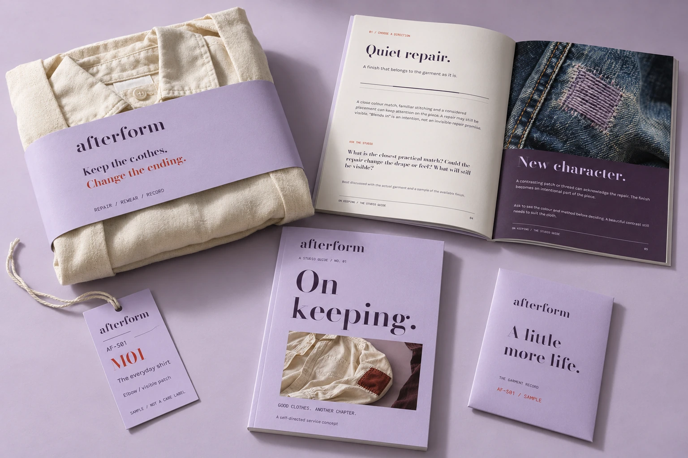
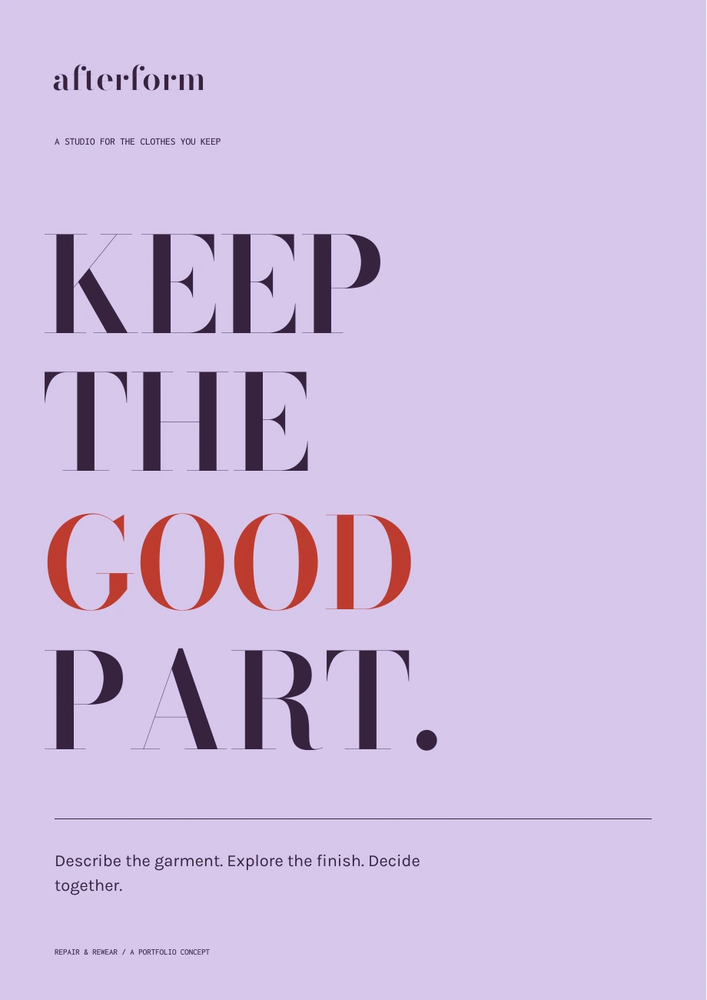
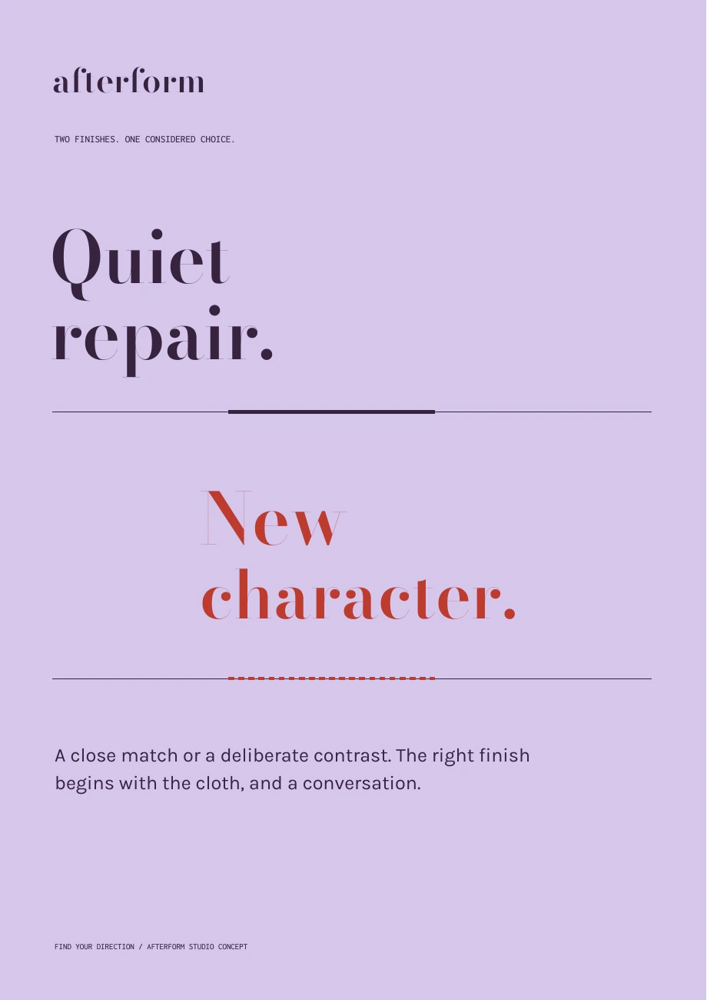

TYPOGRAPHY / CAMPAIGN / IDENTITY
Different worlds.
A deliberate point of view.
A collection of graphic systems developed alongside the products. Each starts with a subject, an audience and something worth communicating.
These are concept applications with editable, readable typography. Images are credited where used; sample product imagery is identified as illustrative.
Fashion identity / Editorial / Labels / Packaging
AFTERFORM
A garment-repair identity that makes its graphic details useful. The repair codes connect campaign, labels and product; the printed guide explains the same choices as the interface.
Explore the complete identity, print & packaging ↗


24-page publication · 16-page identity manual · Expanded service paper system · Packaging · Environmental hierarchy · Campaign masters · Nine interactive product studies. Read the case study ↗
Cultural identity / Campaign / Environmental graphics
INTERVAL
A listening-festival system with space as its central idea. The identity extends from six distinct campaign compositions to a twelve-page pocket guide, directional signs, listening cards, social graphics and a useful digital programme.
Explore six posters, the pocket guide & wayfinding ↗MAKE
SPACE.
For the sound.
For the silence.
For something new.
BETWEEN
THE
NOTES.
TAKE
YOUR
TIME.
Product systems / Interaction design
ImHere
A student-facing check-in guide and a context-first campaign poster. The same vocabulary appears in the product, reducing the gap between an institutional message and the next action.
See the product and its decisions ↗Being here
should be
clear.
See where you stand.
A MISSED CHECK-IN
ISN’T THE WHOLE STORY.
There’s
room for
context.
Let a person review it.YOUR RECORD.
YOUR VOICE.
Navy institutional rules, record numbers and an orange exception accent. Campaign typography centers student agency. Orange always accompanies a written status.
Civic experience / Accessible interaction
Holland Walking Tour
A place-led visitor poster and a typographic “Your walk. Your pace.” edition. A printed guide should retain legible route metadata and source attribution, not shrink a phone screen onto paper.
See the product and its decisions ↗Meet Holland.
On foot.

Your walk.
Your pace.
Your Holland.
A welcoming way to discover
Holland, Michigan.
Documentary streetscape photography, lake teal, pale paper and yellow wayfinding accents. Use numbered story sequences; never imply that a decorative diagram is an accurate map.
Information design / Editorial UI
Áurea
A catalogue-cover poster and a note-index editorial edition. Citron labels and oxblood type connect printed matter to the search interface; no invented brand endorsement or perfume advertising claim is needed.
See the product and its decisions ↗Follow
the notes.
A place to begin.DISCOVER.
UNDERSTAND.
B
Bergamot.
One note.
More than one possibility.
that share a note.FIND YOUR
CONNECTION.
Oxblood type and rules on warm paper, with citron used sparingly for wayfinding accents. Fragrance imagery is illustrative; index numbering, not decorative scientific charts, gives the system its archival character.
Brand systems / Service design
Loopline
A two-page partner brief, printable handoff field sheet and campaign posters. Large condensed headlines attract attention; small operational labels remain readable at actual print size.
See the product and its decisions ↗GOOD
FOOD.
FURTHER.
A useful next chapter.KEEP IT
MOVING.
When it is ready.CLARITY
TRAVELS WELL.
Forest green carries trust; coral identifies moments of action; yellow supports labeling. Strong horizontal rules and modular numbering replace decorative gradients. One-color layouts remain usable.
Connected data / Everyday utility
Nutriva
A useful kitchen inventory sheet and an ingredient-led meal-planning campaign. Every graphic refers to the same practical behavior: check, plan, cook.
See the product and its decisions ↗A good dinner
starts with
what you have.
figuring out.
GUESSING.+MORE
DINNER.
Find your next meal.USE WHAT
YOU HAVE.
Ingredient checklists, recipe cards and simple kitchen labels. Photography represents the actual sample meals; green communicates the product identity, not an unsupported health claim.
Editorial experience / Reading interaction
Novella
A literary journal cover, a blind-excerpt campaign and attributed passage treatments. Use real, readable copy and deliberate scale; avoid decorative microtext or invented author endorsements.
See the product and its decisions ↗less noise.
More story.
Find a voice.READ · RETURN
REMEMBER
NO COVER.
NO RATING.
JUST THE FIRST LINE.
Let the
writing
find you.
Book-cover studies, editorial folios, rules and passage quotations with attribution. The visual motif is the page, not a row of indistinguishable app cards.
A WORKING EDITORIAL APPLICATION
Clarity,
on paper.
The Loopline partner brief carries the brand into a document someone could actually use: a clear overview and a handoff field sheet.
Open the partner brief ↗